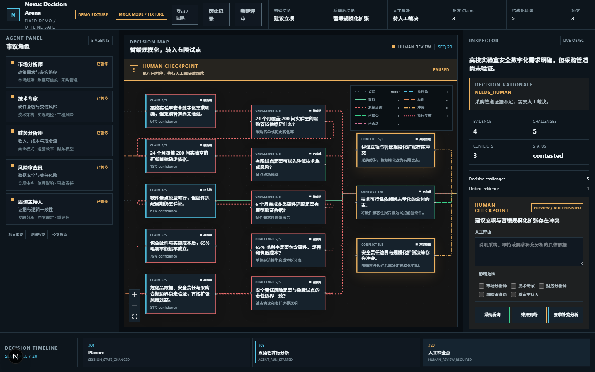
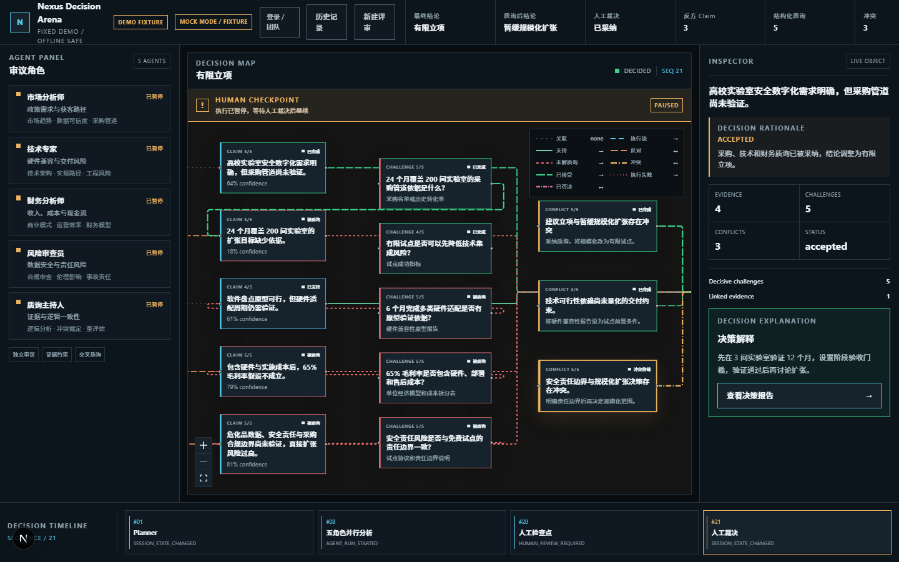
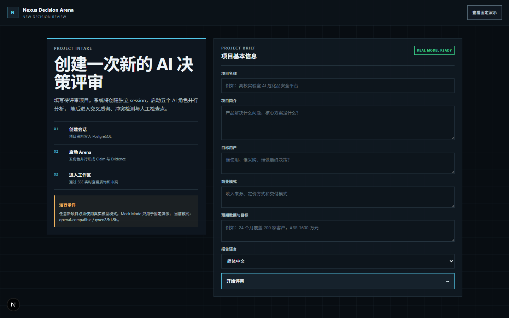

| 赛项 | AI 创新应用挑战赛（个人赛） |
| 作品形态 | Web 应用（Next.js 前端 + Node 服务端 + PostgreSQL） |
| 代码仓库 | Gitee：gitee.com/lost666666/nexus-decision-arena ｜ GitHub：github.com/LOST-123456/nexus-decision-arena |
| 配套材料 | 技术文档（29 页 PDF）、演示视频（7 分 54 秒，含 2 分 28 秒 AI 协同复现） |
用大模型做商业决策辅助，最常见的产出是一段结构完整、语气笃定的分析文本。它读起来像结论， 但既不能比较（两个角色的判断凭什么一个更可信？），也不能质疑（哪句是可验证事实，哪句是推测？）， 更不能追责（最后拍板的是模型还是人？）。观点变多了，决策并没有变好。
Nexus Decision Arena 换了一个出发点：不追求生成更多观点，而是让观点可比较、可质疑、可追责。 系统把决策过程固定成五步，每个结论都必须携带类型、立场、置信度和证据引用， 未解决的分歧被显式记录为冲突，最终结论必须由人裁决并留下理由。
| 步骤 | 系统做什么 | 为什么这样设计 |
|---|---|---|
| ① 意图确认 | 把项目简报解析为结构化 DecisionSession | 先定领域语义，再让模型进入分析 |
| ② 独立分析 | 五角色并行产出 Claim 与 Evidence | 先独立，后交叉，避免相互锚定 |
| ③ 交叉质询 | 结构化质询 → 应答 → 主持人评估 | 质疑是可测试的协议对象，不是自由文本 |
| ④ 冲突检测 | 把未解决分歧记为 Conflict，标注严重度与影响范围 | 分歧要显式存在，不能藏在段落之间 |
| ⑤ 人工裁决与报告 | Human Checkpoint 三选一 + 理由；输出可回放报告 | 高风险决定不自动完成，决策必须可追责 |
Last-Event-ID 补发，不漏事件。| 模式 | 用途 | 说明 |
|---|---|---|
| 固定 Demo | 评委十分钟内复现完整流程 | 不依赖数据库、外网与模型密钥：corepack pnpm demo:fixture |
| 真实模型 | 用真实 LLM 跑任意新项目 | 需在设置里配置服务地址与密钥；运行模式标记会贯穿页面、报告与导出物，不会把 fixture 结果说成真实分析 |
环境要求：Node.js 22、pnpm（corepack 自带）、Docker Desktop（PostgreSQL 16）。完整步骤、依赖清单、
环境变量模板与故障排查见仓库 README 与随包 03-reproduction-guide.md。
01流程是状态机，不是提示词。五步固定，模型只负责单步内的产出， 不能自行编排。这决定了结果可对比、可回归测试，也让「模型今天心情不同」不会改变流程本身。
02每个结论都带「可被推翻的把手」。Claim 携带类型（事实 / 推断 / 假设）、 立场、重要度、置信度与证据引用；证据不足会触发结构化质疑，而不是被悄悄放过。
03质疑是结构化协议对象。一条质询包含目标主张、所需证据、 严重度、解决策略与预期形态，可被程序校验、可被统计、可被回归——这是它区别于「再生成一段批评文字」的地方。
04分歧显式化。未解决的分歧进入 Conflict，带严重度与影响范围， 在决策地图上以红色标记呈现。观众一眼能看到「哪里还没谈拢」，而不是读完整篇分析去找。
05人的判断留在链上。人工裁决不只是点按钮：选择、理由、影响范围、 前后结论差异全部入库；历史报告快照不可变，同一会话继续评审会生成新版本而不是覆盖旧结论。
06「像真的」不等于「已核实」。系统把定位、抓取、抽取候选与核实 拆成四个独立状态，任何一步都不会自动升级下一步。审计导出时默认保留并标注未核实内容， 而不是筛掉它假装干净。
07结果能带走。报告支持 PDF / Markdown / 审计包三出口， 并附一条可回放的事件时间线：看到的不是一张截图，而是导致这个结论的完整事件链。
| 层次 | 规模 | 覆盖什么 |
|---|---|---|
| 单元与集成 | 157 条断言全通过 | 共享 schema、状态机、质询协议、幂等与 lease、权限、报告汇总 |
| E2E（Playwright） | 桌面 + 移动 4/4 | 固定 Demo 全流程、Inspector、人工检查点、报告与导出 |
| 稳定性重复 | 80/80（同一批用例重复 20 轮） | 并发与事件顺序是否稳定，验证「跑一次过」不是运气 |
| 类型与构建 | 5 个包 typecheck + 生产构建 | 类型契约不漂移；构建产物可用于部署 |
docs/ai-history/（3404 条逐字消息 + 5 条核心 Prompt 链）。| 问题 | 表现 | 根因与修复 |
|---|---|---|
| 进度条永远不动 | 整轮跑完也不自动刷新，用户只能手动刷新页面，像卡死 | Next 的 gzip 把 SSE 攒在缓冲区（实测 8 秒 0 字节）。关掉压缩后同一请求 1 毫秒收到 51 KB |
| 并发质询结果错位 | 把并发从 1 提到 10 之后，质询结果与主张对不上 | 固定样例 runner 里有一个共享的可变游标（index）当身份用。改为按身份定位，结果按输入顺序写回 |
| 模型「假通过」 | 模型只输出 4 行 import，脚本退出码 0，看起来检查通过 | 把验收条件写进 Prompt 并做负向验证；这一轮完整过程就是演示视频 5:26–7:54 那段 |
没做到的部分：没有做「AI 自动生成测试」的规模化评测，也没有把 AI 判定当作合入门槛。 本期所有合入判断的依据仍是可执行的测试与人的复核。
六个核心对象：DecisionSession、Claim、Evidence、
Challenge、Conflict、HumanDecision，全部有显式状态与合法迁移。
跨对象的约束写进数据库层（如「open 状态必须没有认领人、in_review 必须有」），
而不是只靠应用层自觉。
next_event_sequence + 1 RETURNING 原子自增，并发下不撞号。after / Last-Event-ID 重连，缺失序号触发 gap 恢复，退避 25ms→1000ms。close / error 时释放订阅、计时器与心跳，避免长连接泄漏。
质询默认并发 6、上限 12（质询段从 34.2 秒降到 4.3 秒）。并发改造必须保住一个语义：
「质询已创建但应答失败」仍以 open 计入结果，不能因为并发而丢。写回严格按输入顺序，
因为冲突检测与报告读取依赖顺序。同一 Idempotency-Key 的并发请求只允许一个执行者持租约，
过期租约可被安全回收，旧租约不能覆盖新租约的结果。
PostgreSQL 16 + Drizzle ORM。踩过的一个坑值得记：sql 模板不会把 JS 数组展开成 SQL 列表，
传数组会直接 500——值列表一律走 inArray()，jsonb 重叠查询走专用判定，空数组在进查询前早退。
集成测试使用独立数据库并通过环境变量隔离，避免测试写进业务库。
会话读取只有一个判定入口，所有 /api/sessions/ 下的路由都必须经过它；
「无权访问」与「不存在」返回同形 404，避免通过状态码探测他人资源。
所有非幂等写操作要求 Origin / Sec-Fetch-* 校验并通过 CSRF 检查，
非浏览器客户端免来源校验但仍需鉴权。
Next.js 15 App Router。服务端取数必须手动转发 cookie，否则守卫直接 401、整页失败。 决策地图是自绘 SVG：两个缩放下限分开设置（全览能真装下 / 开局可读），节点出界时明确提示并给「全览」按钮， 不静默裁切。主题用三层 CSS 变量实现明暗切换。



REAL MODEL READY
表示服务地址与密钥校验通过；左下运行条件写明「任意新项目必须使用真实模型模式，Mock Mode 只用于固定演示」，
并显示当前实际使用的模型（openai-compatible / qwen2.5:3b）。
未发表、未获奖。本项目为本次赛事首次对外提交，此前没有论文、专利、软著或任何级别的获奖记录。 代码与文档在两个公开平台可查（Gitee / GitHub，main 分支，完整细粒度提交历史）。
不是在他人项目基础上的二次开发。本项目从空仓库起步，首个提交只有 2 个文件 879 行（设计冻结）， 此后按功能模块逐个落地；没有 fork、没有沿用其他项目的代码或架构。
过程中做过一次自身架构调整：早期代码按「层」组织（web / core / lib）， 路由与业务规则混在一起；后来收敛为按领域分层，并把会话读取权限集中到单一入口。 同时把三个「整层打包」的大提交拆成 13 个按功能落地的细粒度提交——这不是功能优化， 而是为了让开发过程本身可被复查。
Next.js 15、React 19、TypeScript、PostgreSQL 16、Drizzle ORM、Zod、Vitest、Playwright、
Tailwind CSS、Ollama（本地模型运行时）。全部通过 pnpm 锁定版本，pnpm-lock.yaml 随仓库提交。